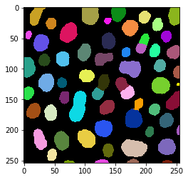

Basic statistics with pyclesperanto
Contents
Basic statistics with pyclesperanto¶
A common use case for image processing in the biology context is deriving statistics of segmented objects. clEsperanto offers a function for that: statistics_of_labelled_pixels.
import pyclesperanto_prototype as cle
from skimage.io import imread, imsave, imshow
import matplotlib
import numpy as np
# initialize GPU
cle.select_device("RTX")
<Apple M1 Max on Platform: Apple (2 refs)>
# load data
image = imread('https://samples.fiji.sc/blobs.png')
# segment the image
labels = cle.voronoi_otsu_labeling(image, spot_sigma=3.5)
cle.imshow(labels, labels=True)

Deriving basic statistics of labelled objects¶
statistics = cle.statistics_of_labelled_pixels(image, labels)
statistics
{'label': array([ 1, 2, 3, 4, 5, 6, 7, 8, 9, 10, 11, 12, 13, 14, 15, 16, 17,
18, 19, 20, 21, 22, 23, 24, 25, 26, 27, 28, 29, 30, 31, 32, 33, 34,
35, 36, 37, 38, 39, 40, 41, 42, 43, 44, 45, 46, 47, 48, 49, 50, 51,
52, 53, 54, 55, 56, 57, 58, 59, 60, 61]),
'original_label': array([ 1, 2, 3, 4, 5, 6, 7, 8, 9, 10, 11, 12, 13, 14, 15, 16, 17,
18, 19, 20, 21, 22, 23, 24, 25, 26, 27, 28, 29, 30, 31, 32, 33, 34,
35, 36, 37, 38, 39, 40, 41, 42, 43, 44, 45, 46, 47, 48, 49, 50, 51,
52, 53, 54, 55, 56, 57, 58, 59, 60, 61]),
'bbox_min_x': array([ 0., 0., 3., 5., 10., 16., 16., 25., 24., 36., 34.,
38., 53., 55., 50., 58., 59., 66., 74., 88., 88., 91.,
95., 112., 116., 116., 116., 120., 124., 132., 129., 128., 143.,
150., 161., 158., 161., 156., 169., 160., 166., 179., 183., 188.,
189., 199., 206., 205., 211., 209., 213., 225., 221., 220., 227.,
234., 236., 244., 250., 233., 250.], dtype=float32),
'bbox_min_y': array([ 81., 129., 39., 156., 0., 198., 44., 76., 108., 17., 159.,
231., 72., 114., 202., 137., 25., 249., 136., 59., 199., 101.,
0., 131., 75., 184., 248., 109., 152., 17., 223., 41., 0.,
113., 65., 127., 21., 87., 247., 216., 166., 148., 58., 6.,
43., 195., 60., 157., 17., 114., 85., 38., 173., 214., 249.,
62., 0., 94., 123., 136., 192.], dtype=float32),
'bbox_min_z': array([0., 0., 0., 0., 0., 0., 0., 0., 0., 0., 0., 0., 0., 0., 0., 0., 0.,
0., 0., 0., 0., 0., 0., 0., 0., 0., 0., 0., 0., 0., 0., 0., 0., 0.,
0., 0., 0., 0., 0., 0., 0., 0., 0., 0., 0., 0., 0., 0., 0., 0., 0.,
0., 0., 0., 0., 0., 0., 0., 0., 0., 0.], dtype=float32),
'bbox_max_x': array([ 19., 16., 13., 27., 35., 37., 41., 43., 49., 53., 54.,
54., 75., 71., 74., 74., 87., 83., 102., 109., 117., 115.,
122., 131., 146., 144., 139., 140., 148., 143., 147., 150., 167.,
172., 174., 180., 187., 191., 188., 201., 194., 195., 200., 207.,
205., 212., 223., 222., 227., 239., 232., 241., 244., 248., 242.,
255., 255., 255., 255., 255., 255.], dtype=float32),
'bbox_max_y': array([114., 150., 51., 181., 29., 232., 71., 96., 138., 35., 184.,
250., 96., 131., 233., 157., 57., 253., 187., 87., 229., 121.,
28., 150., 96., 211., 253., 136., 175., 27., 245., 68., 23.,
138., 80., 149., 47., 114., 253., 244., 196., 168., 75., 26.,
62., 211., 81., 176., 39., 141., 105., 57., 196., 240., 253.,
84., 29., 115., 127., 167., 209.], dtype=float32),
'bbox_max_z': array([0., 0., 0., 0., 0., 0., 0., 0., 0., 0., 0., 0., 0., 0., 0., 0., 0.,
0., 0., 0., 0., 0., 0., 0., 0., 0., 0., 0., 0., 0., 0., 0., 0., 0.,
0., 0., 0., 0., 0., 0., 0., 0., 0., 0., 0., 0., 0., 0., 0., 0., 0.,
0., 0., 0., 0., 0., 0., 0., 0., 0., 0.], dtype=float32),
'bbox_width': array([20., 17., 11., 23., 26., 22., 26., 19., 26., 18., 21., 17., 23.,
17., 25., 17., 29., 18., 29., 22., 30., 25., 28., 20., 31., 29.,
24., 21., 25., 12., 19., 23., 25., 23., 14., 23., 27., 36., 20.,
42., 29., 17., 18., 20., 17., 14., 18., 18., 17., 31., 20., 17.,
24., 29., 16., 22., 20., 12., 6., 23., 6.], dtype=float32),
'bbox_height': array([34., 22., 13., 26., 30., 35., 28., 21., 31., 19., 26., 20., 25.,
18., 32., 21., 33., 5., 52., 29., 31., 21., 29., 20., 22., 28.,
6., 28., 24., 11., 23., 28., 24., 26., 16., 23., 27., 28., 7.,
29., 31., 21., 18., 21., 20., 17., 22., 20., 23., 28., 21., 20.,
24., 27., 5., 23., 30., 22., 5., 32., 18.], dtype=float32),
'bbox_depth': array([1., 1., 1., 1., 1., 1., 1., 1., 1., 1., 1., 1., 1., 1., 1., 1., 1.,
1., 1., 1., 1., 1., 1., 1., 1., 1., 1., 1., 1., 1., 1., 1., 1., 1.,
1., 1., 1., 1., 1., 1., 1., 1., 1., 1., 1., 1., 1., 1., 1., 1., 1.,
1., 1., 1., 1., 1., 1., 1., 1., 1., 1.], dtype=float32),
'min_intensity': array([ 96., 88., 104., 88., 96., 88., 96., 96., 88., 96., 88.,
88., 96., 104., 88., 96., 88., 88., 88., 88., 88., 88.,
88., 96., 72., 80., 80., 80., 88., 96., 88., 88., 72.,
88., 88., 88., 96., 80., 88., 80., 88., 72., 80., 88.,
96., 96., 96., 80., 96., 88., 96., 88., 80., 80., 96.,
88., 88., 88., 112., 80., 96.], dtype=float32),
'max_intensity': array([248., 232., 200., 248., 232., 232., 248., 240., 240., 240., 240.,
224., 224., 232., 216., 232., 232., 224., 248., 248., 248., 232.,
248., 232., 248., 240., 216., 232., 232., 200., 232., 248., 248.,
232., 224., 248., 232., 240., 248., 248., 240., 232., 232., 248.,
208., 232., 248., 248., 224., 248., 240., 248., 248., 248., 248.,
232., 248., 232., 176., 248., 232.], dtype=float32),
'sum_intensity': array([106008., 54968., 18064., 89704., 88312., 87752., 107000.,
51296., 115008., 47200., 80432., 44904., 82528., 38760.,
110000., 50016., 119192., 10032., 189240., 88736., 143728.,
77624., 141824., 51312., 92968., 124336., 18832., 73296.,
79976., 15304., 58696., 99768., 100088., 63440., 32512.,
68760., 100352., 144504., 16896., 178712., 137024., 37496.,
41056., 62432., 37600., 34008., 58488., 50456., 51904.,
133216., 59152., 48880., 85128., 128328., 11408., 72296.,
105208., 37408., 3816., 102600., 14584.], dtype=float32),
'area': array([ 558., 308., 114., 478., 484., 552., 576., 302., 609.,
264., 439., 264., 463., 226., 612., 278., 712., 64.,
1000., 475., 697., 419., 717., 283., 491., 655., 113.,
410., 467., 101., 330., 504., 488., 362., 189., 359.,
552., 768., 100., 946., 715., 230., 231., 324., 230.,
199., 310., 288., 307., 670., 333., 266., 436., 628.,
66., 402., 515., 204., 27., 523., 85.], dtype=float32),
'mean_intensity': array([189.9785 , 178.46753, 158.45615, 187.66527, 182.46281, 158.97101,
185.76389, 169.85431, 188.84729, 178.78787, 183.2164 , 170.09091,
178.24622, 171.50443, 179.73856, 179.91367, 167.4045 , 156.75 ,
189.24 , 186.81264, 206.20947, 185.26015, 197.80196, 181.31448,
189.3442 , 189.82596, 166.65486, 178.77074, 171.25482, 151.52475,
177.86667, 197.95238, 205.09836, 175.24861, 172.02116, 191.53203,
181.7971 , 188.15625, 168.96 , 188.91331, 191.64195, 163.0261 ,
177.7316 , 192.69136, 163.47826, 170.89447, 188.67097, 175.19444,
169.0684 , 198.82985, 177.63364, 183.7594 , 195.24771, 204.34395,
172.84848, 179.84079, 204.28738, 183.37254, 141.33333, 196.1759 ,
171.57648], dtype=float32),
'sum_intensity_times_x': array([ 816224., 400472., 140864., 1446528., 1767568., 2270416.,
3022776., 1721088., 4274280., 2101776., 3549320., 2067792.,
5258816., 2424200., 6836968., 3334360., 8704864., 739992.,
16827080., 8776336., 14774536., 7986744., 15375528., 6201536.,
12033512., 16188976., 2404704., 9559544., 10896376., 2100520.,
8094320., 13819688., 15446728., 10135008., 5442896., 11672560.,
17448336., 25242920., 3017000., 32152144., 24586264., 7043320.,
7861616., 12315240., 7434560., 6999248., 12521536., 10776976.,
11352784., 29801280., 13158928., 11394704., 19825296., 30027512.,
2673896., 17726184., 25976864., 9380976., 964128., 25224568.,
3691856.], dtype=float32),
'mass_center_x': array([ 7.6996455, 7.2855477, 7.7980514, 16.125568 , 20.015038 ,
25.873096 , 28.250242 , 33.55209 , 37.165066 , 44.529152 ,
44.12821 , 46.04917 , 63.721596 , 62.54386 , 62.154255 ,
66.66587 , 73.03229 , 73.76316 , 88.91926 , 98.90389 ,
102.79511 , 102.89014 , 108.412735 , 120.85937 , 129.43713 ,
130.20345 , 127.69244 , 130.42381 , 136.24557 , 137.253 ,
137.90242 , 138.51825 , 154.33147 , 159.75737 , 167.41191 ,
169.758 , 173.87134 , 174.68665 , 178.56297 , 179.91039 ,
179.43034 , 187.8419 , 191.48518 , 197.25845 , 197.72766 ,
205.81181 , 214.08727 , 213.59157 , 218.72658 , 223.70647 ,
222.45956 , 233.11588 , 232.88808 , 233.99034 , 234.3878 ,
245.189 , 246.90959 , 250.7746 , 252.65408 , 245.85349 ,
253.14427 ], dtype=float32),
'sum_intensity_times_y': array([10298040., 7674896., 811208., 15153912., 1166752., 18851392.,
6192640., 4409256., 14048424., 1226944., 13825976., 10800896.,
6911232., 4762088., 23916072., 7332880., 4923528., 2525824.,
30820440., 6497064., 30735032., 8644200., 1804888., 7233120.,
7790952., 24531352., 4729504., 8949992., 13048056., 333424.,
13690232., 5456096., 985464., 7922616., 2362320., 9583488.,
3329416., 14319640., 4240736., 41050904., 24895800., 5895848.,
2737000., 990040., 1956840., 6904024., 4132224., 8383304.,
1447184., 16960968., 5608976., 2294776., 15713520., 29183288.,
2869144., 5279648., 1397768., 3937008., 477768., 15679424.,
2925640.], dtype=float32),
'mass_center_y': array([ 97.14399 , 139.6248 , 44.90744 , 168.9324 , 13.211704,
214.82578 , 57.87514 , 85.957115, 122.15171 , 25.994576,
171.89645 , 240.53305 , 83.74409 , 122.860886, 217.41884 ,
146.61069 , 41.307537, 251.77672 , 162.8643 , 73.2179 ,
213.84164 , 111.359886, 12.726253, 140.96352 , 83.80251 ,
197.29887 , 251.14189 , 122.107506, 163.14964 , 21.786722,
233.23961 , 54.687836, 9.845976, 124.883606, 72.65994 ,
139.37592 , 33.177376, 99.09511 , 250.99052 , 229.70424 ,
181.68935 , 157.23938 , 66.66504 , 15.857893, 52.043617,
203.01176 , 70.6508 , 166.15079 , 27.881935, 127.3193 ,
94.8231 , 46.947136, 184.58698 , 227.4117 , 251.5028 ,
73.02822 , 13.285758, 105.24508 , 125.201256, 152.82089 ,
200.60614 ], dtype=float32),
'sum_intensity_times_z': array([0., 0., 0., 0., 0., 0., 0., 0., 0., 0., 0., 0., 0., 0., 0., 0., 0.,
0., 0., 0., 0., 0., 0., 0., 0., 0., 0., 0., 0., 0., 0., 0., 0., 0.,
0., 0., 0., 0., 0., 0., 0., 0., 0., 0., 0., 0., 0., 0., 0., 0., 0.,
0., 0., 0., 0., 0., 0., 0., 0., 0., 0.], dtype=float32),
'mass_center_z': array([0., 0., 0., 0., 0., 0., 0., 0., 0., 0., 0., 0., 0., 0., 0., 0., 0.,
0., 0., 0., 0., 0., 0., 0., 0., 0., 0., 0., 0., 0., 0., 0., 0., 0.,
0., 0., 0., 0., 0., 0., 0., 0., 0., 0., 0., 0., 0., 0., 0., 0., 0.,
0., 0., 0., 0., 0., 0., 0., 0., 0., 0.], dtype=float32),
'sum_x': array([ 4578., 2288., 897., 7730., 9708., 14389., 16349.,
10176., 22637., 11769., 19377., 12158., 29549., 14154.,
38000., 18508., 52193., 4728., 89064., 47009., 71581.,
43096., 77644., 34158., 63663., 85320., 14443., 53485.,
63641., 13872., 45515., 69762., 75281., 57826., 31631.,
61003., 96014., 134113., 17880., 170454., 128125., 43162.,
44215., 63910., 45495., 40944., 66370., 61507., 67184.,
149948., 74106., 62014., 101544., 146962., 15477., 98570.,
126894., 51086., 6824., 128289., 21496.], dtype=float32),
'centroid_x': array([ 8.204301, 7.428571, 7.868421, 16.171549, 20.057852,
26.067028, 28.38368 , 33.695366, 37.170773, 44.579544,
44.13895 , 46.053032, 63.820736, 62.62832 , 62.091503,
66.57554 , 73.30478 , 73.875 , 89.064 , 98.96632 ,
102.69871 , 102.854416, 108.2901 , 120.699646, 129.65988 ,
130.25954 , 127.814156, 130.45122 , 136.27623 , 137.34653 ,
137.92424 , 138.41667 , 154.26434 , 159.74033 , 167.35979 ,
169.92479 , 173.9384 , 174.6263 , 178.8 , 180.18393 ,
179.1958 , 187.66087 , 191.40692 , 197.25308 , 197.80435 ,
205.74875 , 214.09677 , 213.56598 , 218.8404 , 223.80298 ,
222.54054 , 233.13535 , 232.89908 , 234.01593 , 234.5 ,
245.199 , 246.39612 , 250.42157 , 252.74074 , 245.29445 ,
252.89412 ], dtype=float32),
'sum_y': array([ 54380., 42994., 5120., 80704., 6446., 118912., 33226.,
25967., 74529., 6911., 75491., 63507., 38851., 27768.,
133074., 40793., 29493., 16100., 162288., 34808., 149094.,
46684., 9313., 39937., 41129., 129259., 28352., 49982.,
76191., 2201., 77002., 27643., 4970., 45125., 13734.,
50073., 18432., 76178., 25071., 217387., 130113., 36252.,
15422., 5150., 11971., 40394., 21922., 47907., 8583.,
85352., 31623., 12555., 80506., 142805., 16586., 29367.,
7139., 21511., 3380., 80110., 17054.], dtype=float32),
'centroid_y': array([ 97.4552 , 139.59091 , 44.91228 , 168.83682 , 13.318182 ,
215.42029 , 57.68403 , 85.983444 , 122.37931 , 26.17803 ,
171.96127 , 240.55682 , 83.911446 , 122.867256 , 217.44118 ,
146.73741 , 41.422752 , 251.5625 , 162.288 , 73.28 ,
213.90817 , 111.41766 , 12.988842 , 141.12015 , 83.765785 ,
197.34198 , 250.90265 , 121.90732 , 163.14989 , 21.79208 ,
233.3394 , 54.84722 , 10.184426 , 124.65469 , 72.666664 ,
139.47911 , 33.391304 , 99.1901 , 250.71 , 229.79599 ,
181.97623 , 157.61739 , 66.7619 , 15.8950615, 52.047825 ,
202.98492 , 70.716125 , 166.34375 , 27.957655 , 127.391045 ,
94.96397 , 47.19925 , 184.64679 , 227.3965 , 251.30302 ,
73.05224 , 13.862136 , 105.446075 , 125.18519 , 153.174 ,
200.6353 ], dtype=float32),
'sum_z': array([0., 0., 0., 0., 0., 0., 0., 0., 0., 0., 0., 0., 0., 0., 0., 0., 0.,
0., 0., 0., 0., 0., 0., 0., 0., 0., 0., 0., 0., 0., 0., 0., 0., 0.,
0., 0., 0., 0., 0., 0., 0., 0., 0., 0., 0., 0., 0., 0., 0., 0., 0.,
0., 0., 0., 0., 0., 0., 0., 0., 0., 0.], dtype=float32),
'centroid_z': array([0., 0., 0., 0., 0., 0., 0., 0., 0., 0., 0., 0., 0., 0., 0., 0., 0.,
0., 0., 0., 0., 0., 0., 0., 0., 0., 0., 0., 0., 0., 0., 0., 0., 0.,
0., 0., 0., 0., 0., 0., 0., 0., 0., 0., 0., 0., 0., 0., 0., 0., 0.,
0., 0., 0., 0., 0., 0., 0., 0., 0., 0.], dtype=float32),
'sum_distance_to_centroid': array([ 5287.09 , 2064.4695 , 463.36224, 3969.4053 , 4421.9536 ,
5264.5986 , 5223.994 , 1979.7954 , 5699.4224 , 1617.3875 ,
3498.4558 , 1632.8871 , 3758.8926 , 1281.4285 , 5761.868 ,
1759.4447 , 7268.5293 , 264.55823, 13825.64 , 3986.365 ,
7006.266 , 3248.494 , 7275.649 , 1799.4294 , 4439.745 ,
6312.675 , 610.5444 , 3227.1516 , 3865.1748 , 384.595 ,
2276.8481 , 4289.279 , 4100.9873 , 2621.6206 , 983.11456,
2620.5176 , 4890.122 , 8314.941 , 460.982 , 11336.089 ,
7216.7476 , 1374.9033 , 1329.2596 , 2203.8838 , 1346.1937 ,
1069.5747 , 2088.401 , 1847.5991 , 2061.3887 , 6539.7124 ,
2292.4663 , 1637.6711 , 3441.4138 , 5931.1553 , 252.80081,
3057.6768 , 4585.1685 , 1184.636 , 53.63083, 4798.24 ,
359.6317 ], dtype=float32),
'mean_distance_to_centroid': array([ 9.475071 , 6.702823 , 4.064581 , 8.304195 , 9.136268 ,
9.537316 , 9.069434 , 6.555614 , 9.358658 , 6.1264677,
7.9691477, 6.1851783, 8.118559 , 5.6700373, 9.414817 ,
6.328938 , 10.208609 , 4.1337223, 13.82564 , 8.392347 ,
10.0520315, 7.752969 , 10.147348 , 6.358408 , 9.042251 ,
9.637671 , 5.4030476, 7.8711014, 8.276606 , 3.8078713,
6.89954 , 8.510474 , 8.403663 , 7.242046 , 5.2016644,
7.299492 , 8.858917 , 10.826747 , 4.60982 , 11.983181 ,
10.093353 , 5.9778404, 5.7543707, 6.8021107, 5.8530164,
5.3747473, 6.736777 , 6.4152746, 6.714621 , 9.760765 ,
6.884283 , 6.1566586, 7.893151 , 9.444515 , 3.8303154,
7.606161 , 8.903239 , 5.8070393, 1.986327 , 9.174456 ,
4.2309613], dtype=float32),
'sum_distance_to_mass_center': array([ 5299.44 , 2064.9897 , 463.446 , 3969.5327 ,
4421.724 , 5273.0513 , 5225.082 , 1980.1869 ,
5700.4453 , 1617.8821 , 3498.5603 , 1632.8939 ,
3759.6177 , 1281.5521 , 5761.941 , 1759.8566 ,
7271.091 , 265.19025 , 13824.683 , 3986.5388 ,
7006.486 , 3248.5674 , 7278.2314 , 1800.1882 ,
4438.052 , 6312.7793 , 612.312 , 3227.9175 ,
3865.1963 , 384.62256 , 2276.902 , 4290.043 ,
4103.7656 , 2622.6487 , 983.1431 , 2621.762 ,
4891.035 , 8314.723 , 463.33752 , 11337.998 ,
7220.1143 , 1375.8186 , 1329.5658 , 2203.9104 ,
1346.3219 , 1069.6078 , 2088.4976 , 1848.1556 ,
2061.8542 , 6539.9966 , 2292.9365 , 1638.4567 ,
3441.5103 , 5931.184 , 253.59766 , 3057.7043 ,
4598.606 , 1188.5508 , 53.704212, 4810.059 ,
360.90408 ], dtype=float32),
'mean_distance_to_mass_center': array([ 9.497204 , 6.704512 , 4.0653157, 8.3044615, 9.135794 ,
9.552629 , 9.071323 , 6.55691 , 9.360337 , 6.128341 ,
7.9693856, 6.185204 , 8.120125 , 5.6705847, 9.414936 ,
6.3304195, 10.212206 , 4.1435976, 13.824682 , 8.392714 ,
10.052347 , 7.7531443, 10.15095 , 6.361089 , 9.038802 ,
9.637831 , 5.41869 , 7.8729696, 8.276651 , 3.808144 ,
6.8997035, 8.51199 , 8.409356 , 7.244886 , 5.2018156,
7.302958 , 8.860571 , 10.826462 , 4.633375 , 11.985199 ,
10.098062 , 5.98182 , 5.7556963, 6.8021927, 5.8535733,
5.3749137, 6.7370887, 6.4172072, 6.7161374, 9.7611885,
6.8856955, 6.1596117, 7.893372 , 9.444561 , 3.8423886,
7.60623 , 8.929332 , 5.826229 , 1.9890449, 9.197054 ,
4.24593 ], dtype=float32),
'standard_deviation_intensity': array([37.76611 , 37.528027, 26.381859, 43.43828 , 37.722134, 31.277842,
37.477398, 35.35935 , 40.018936, 38.448517, 41.58287 , 39.194824,
33.723557, 35.425636, 35.271267, 42.16164 , 25.05375 , 38.79997 ,
40.269474, 39.985325, 51.311035, 40.343353, 38.471058, 40.382927,
46.796715, 41.056732, 37.506756, 35.848614, 32.842648, 26.754696,
40.383694, 46.04481 , 48.71974 , 36.35748 , 37.483814, 43.367493,
33.504738, 39.811745, 43.307716, 38.91829 , 41.148895, 43.016975,
38.42502 , 46.523758, 26.176773, 36.568157, 44.46167 , 39.044357,
30.160568, 46.173885, 38.574265, 45.661743, 48.817417, 49.64469 ,
46.748924, 37.451855, 40.09788 , 40.151653, 18.981472, 41.81796 ,
43.186157], dtype=float32),
'max_distance_to_centroid': array([17.577013 , 11.395502 , 6.6904297, 13.71488 , 20.016039 ,
17.888744 , 14.767074 , 10.245999 , 15.664503 , 9.608045 ,
13.27329 , 10.276217 , 12.790598 , 9.015523 , 15.675437 ,
10.284315 , 17.705032 , 9.237534 , 26.949856 , 14.586422 ,
16.740532 , 12.417071 , 18.172825 , 11.0938225, 17.327543 ,
15.003701 , 11.998881 , 14.103363 , 14.334499 , 6.305352 ,
11.710116 , 13.9374485, 14.797867 , 13.458303 , 8.5314455,
12.852437 , 13.955328 , 18.714024 , 10.064002 , 21.361422 ,
16.292728 , 12.053171 , 9.824292 , 10.963507 , 10.452653 ,
9.046113 , 11.477593 , 10.536355 , 11.720603 , 15.419342 ,
10.916382 , 9.866292 , 12.910312 , 15.094553 , 7.6895857,
13.341759 , 16.315195 , 12.327801 , 3.2871242, 19.72673 ,
8.8883705], dtype=float32),
'max_distance_to_mass_center': array([17.626616 , 11.28727 , 6.719399 , 13.820534 , 19.977444 ,
17.663107 , 14.5371065, 10.253605 , 15.891056 , 9.729252 ,
13.212332 , 10.296549 , 12.981223 , 8.994376 , 15.6901045,
10.410629 , 17.740929 , 9.31749 , 27.543896 , 14.5559435,
16.770693 , 12.434861 , 17.89963 , 10.887694 , 17.549864 ,
15.020911 , 11.839156 , 14.244317 , 14.310548 , 6.386999 ,
11.811499 , 13.767804 , 14.517604 , 13.233599 , 8.563959 ,
12.7935095, 13.985569 , 18.783485 , 9.771819 , 21.607908 ,
16.312721 , 12.446997 , 9.709001 , 10.999852 , 10.4803505,
9.040424 , 11.531962 , 10.3683815, 11.690965 , 15.526697 ,
10.821682 , 10.114606 , 12.946156 , 15.065151 , 7.758037 ,
13.332839 , 15.981338 , 12.012736 , 3.2169633, 19.146832 ,
8.803941 ], dtype=float32),
'mean_max_distance_to_centroid_ratio': array([1.8550799, 1.7001048, 1.6460319, 1.6515603, 2.1908333, 1.875658 ,
1.6282244, 1.5629351, 1.6737981, 1.5682845, 1.6655846, 1.6614262,
1.5754764, 1.5900289, 1.6649753, 1.624967 , 1.7343237, 2.2346768,
1.9492664, 1.7380623, 1.6653879, 1.6015892, 1.7908939, 1.7447485,
1.9162866, 1.5567765, 2.2207618, 1.7917902, 1.7319298, 1.6558732,
1.6972315, 1.6376817, 1.760883 , 1.8583566, 1.6401376, 1.7607304,
1.5752859, 1.7284992, 2.183166 , 1.782617 , 1.6142037, 2.0163085,
1.7072748, 1.6117802, 1.7858574, 1.6830769, 1.7037218, 1.6423856,
1.7455345, 1.5797268, 1.5856962, 1.60254 , 1.6356348, 1.5982348,
2.0075595, 1.7540725, 1.832501 , 2.1229064, 1.6548756, 2.1501799,
2.1007922], dtype=float32),
'mean_max_distance_to_mass_center_ratio': array([1.8559794, 1.6835333, 1.6528603, 1.66423 , 2.1867223, 1.8490309,
1.6025343, 1.5637861, 1.6977012, 1.5875833, 1.6578859, 1.6647065,
1.5986482, 1.5861461, 1.666512 , 1.6445402, 1.7372279, 2.2486472,
1.992371 , 1.7343549, 1.668336 , 1.6038475, 1.7633452, 1.7116085,
1.9416139, 1.5585365, 2.184874 , 1.8092686, 1.7290263, 1.6771947,
1.711885 , 1.6174601, 1.7263633, 1.8266125, 1.6463404, 1.7518257,
1.5784049, 1.7349607, 2.1090066, 1.8028827, 1.615431 , 2.0808043,
1.6868508, 1.6171039, 1.7904192, 1.6819664, 1.7117131, 1.6157155,
1.7407274, 1.5906564, 1.5716178, 1.642085 , 1.6401299, 1.595114 ,
2.0190663, 1.752884 , 1.7897574, 2.0618372, 1.6173407, 2.081844 ,
2.073501 ], dtype=float32)}
We can use pandas to process that kind of tabular data.
import pandas as pd
table = pd.DataFrame(statistics)
table
| label | original_label | bbox_min_x | bbox_min_y | bbox_min_z | bbox_max_x | bbox_max_y | bbox_max_z | bbox_width | bbox_height | ... | centroid_z | sum_distance_to_centroid | mean_distance_to_centroid | sum_distance_to_mass_center | mean_distance_to_mass_center | standard_deviation_intensity | max_distance_to_centroid | max_distance_to_mass_center | mean_max_distance_to_centroid_ratio | mean_max_distance_to_mass_center_ratio | |
|---|---|---|---|---|---|---|---|---|---|---|---|---|---|---|---|---|---|---|---|---|---|
| 0 | 1 | 1 | 0.0 | 81.0 | 0.0 | 19.0 | 114.0 | 0.0 | 20.0 | 34.0 | ... | 0.0 | 5287.089844 | 9.475071 | 5299.439941 | 9.497204 | 37.766109 | 17.577013 | 17.626616 | 1.855080 | 1.855979 |
| 1 | 2 | 2 | 0.0 | 129.0 | 0.0 | 16.0 | 150.0 | 0.0 | 17.0 | 22.0 | ... | 0.0 | 2064.469482 | 6.702823 | 2064.989746 | 6.704512 | 37.528027 | 11.395502 | 11.287270 | 1.700105 | 1.683533 |
| 2 | 3 | 3 | 3.0 | 39.0 | 0.0 | 13.0 | 51.0 | 0.0 | 11.0 | 13.0 | ... | 0.0 | 463.362244 | 4.064581 | 463.446014 | 4.065316 | 26.381859 | 6.690430 | 6.719399 | 1.646032 | 1.652860 |
| 3 | 4 | 4 | 5.0 | 156.0 | 0.0 | 27.0 | 181.0 | 0.0 | 23.0 | 26.0 | ... | 0.0 | 3969.405273 | 8.304195 | 3969.532715 | 8.304461 | 43.438278 | 13.714880 | 13.820534 | 1.651560 | 1.664230 |
| 4 | 5 | 5 | 10.0 | 0.0 | 0.0 | 35.0 | 29.0 | 0.0 | 26.0 | 30.0 | ... | 0.0 | 4421.953613 | 9.136268 | 4421.724121 | 9.135794 | 37.722134 | 20.016039 | 19.977444 | 2.190833 | 2.186722 |
| ... | ... | ... | ... | ... | ... | ... | ... | ... | ... | ... | ... | ... | ... | ... | ... | ... | ... | ... | ... | ... | ... |
| 56 | 57 | 57 | 236.0 | 0.0 | 0.0 | 255.0 | 29.0 | 0.0 | 20.0 | 30.0 | ... | 0.0 | 4585.168457 | 8.903239 | 4598.605957 | 8.929332 | 40.097881 | 16.315195 | 15.981338 | 1.832501 | 1.789757 |
| 57 | 58 | 58 | 244.0 | 94.0 | 0.0 | 255.0 | 115.0 | 0.0 | 12.0 | 22.0 | ... | 0.0 | 1184.635986 | 5.807039 | 1188.550781 | 5.826229 | 40.151653 | 12.327801 | 12.012736 | 2.122906 | 2.061837 |
| 58 | 59 | 59 | 250.0 | 123.0 | 0.0 | 255.0 | 127.0 | 0.0 | 6.0 | 5.0 | ... | 0.0 | 53.630829 | 1.986327 | 53.704212 | 1.989045 | 18.981472 | 3.287124 | 3.216963 | 1.654876 | 1.617341 |
| 59 | 60 | 60 | 233.0 | 136.0 | 0.0 | 255.0 | 167.0 | 0.0 | 23.0 | 32.0 | ... | 0.0 | 4798.240234 | 9.174456 | 4810.059082 | 9.197054 | 41.817959 | 19.726730 | 19.146832 | 2.150180 | 2.081844 |
| 60 | 61 | 61 | 250.0 | 192.0 | 0.0 | 255.0 | 209.0 | 0.0 | 6.0 | 18.0 | ... | 0.0 | 359.631714 | 4.230961 | 360.904083 | 4.245930 | 43.186157 | 8.888371 | 8.803941 | 2.100792 | 2.073501 |
61 rows × 37 columns
table.describe()
| label | original_label | bbox_min_x | bbox_min_y | bbox_min_z | bbox_max_x | bbox_max_y | bbox_max_z | bbox_width | bbox_height | ... | centroid_z | sum_distance_to_centroid | mean_distance_to_centroid | sum_distance_to_mass_center | mean_distance_to_mass_center | standard_deviation_intensity | max_distance_to_centroid | max_distance_to_mass_center | mean_max_distance_to_centroid_ratio | mean_max_distance_to_mass_center_ratio | |
|---|---|---|---|---|---|---|---|---|---|---|---|---|---|---|---|---|---|---|---|---|---|
| count | 61.000000 | 61.000000 | 61.000000 | 61.000000 | 61.0 | 61.000000 | 61.000000 | 61.0 | 61.000000 | 61.000000 | ... | 61.0 | 61.000000 | 61.000000 | 61.000000 | 61.000000 | 61.000000 | 61.000000 | 61.000000 | 61.000000 | 61.000000 |
| mean | 31.000000 | 31.000000 | 128.245895 | 113.409836 | 0.0 | 148.836060 | 135.672134 | 0.0 | 21.590164 | 23.262295 | ... | 0.0 | 3504.359375 | 7.510857 | 3505.712891 | 7.514835 | 38.998928 | 13.153982 | 13.143246 | 1.757816 | 1.754179 |
| std | 17.752934 | 17.752934 | 77.687981 | 74.343658 | 0.0 | 76.843819 | 73.211273 | 0.0 | 6.502248 | 8.152508 | ... | 0.0 | 2726.386963 | 2.190415 | 2726.795654 | 2.189549 | 6.226861 | 4.019384 | 4.042030 | 0.184103 | 0.177547 |
| min | 1.000000 | 1.000000 | 0.000000 | 0.000000 | 0.0 | 13.000000 | 23.000000 | 0.0 | 6.000000 | 5.000000 | ... | 0.0 | 53.630829 | 1.986327 | 53.704212 | 1.989045 | 18.981472 | 3.287124 | 3.216963 | 1.556777 | 1.558537 |
| 25% | 16.000000 | 16.000000 | 58.000000 | 58.000000 | 0.0 | 75.000000 | 75.000000 | 0.0 | 17.000000 | 20.000000 | ... | 0.0 | 1617.387451 | 6.126468 | 1617.882080 | 6.128341 | 36.568157 | 10.284315 | 10.368382 | 1.635635 | 1.617460 |
| 50% | 31.000000 | 31.000000 | 129.000000 | 113.000000 | 0.0 | 148.000000 | 136.000000 | 0.0 | 21.000000 | 23.000000 | ... | 0.0 | 3057.676758 | 7.606161 | 3057.704346 | 7.606230 | 39.194824 | 12.852437 | 12.946156 | 1.700105 | 1.697701 |
| 75% | 46.000000 | 46.000000 | 199.000000 | 166.000000 | 0.0 | 212.000000 | 196.000000 | 0.0 | 25.000000 | 28.000000 | ... | 0.0 | 4890.122070 | 9.136268 | 4891.035156 | 9.135794 | 43.016975 | 15.419342 | 15.526697 | 1.791790 | 1.802883 |
| max | 61.000000 | 61.000000 | 250.000000 | 249.000000 | 0.0 | 255.000000 | 253.000000 | 0.0 | 42.000000 | 52.000000 | ... | 0.0 | 13825.639648 | 13.825640 | 13824.682617 | 13.824682 | 51.311035 | 26.949856 | 27.543896 | 2.234677 | 2.248647 |
8 rows × 37 columns